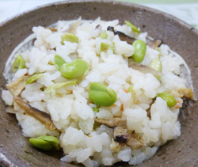

夏の精進ごはん
- 調理時間：60 分
- （一人当たり）
- カロリー：324kcal
- たんぱく質：7.9g
- 脂質：4.1g
- 炭水化物：61.6g
- 塩分：1.2g


＜３合分＞
- お米
- 3合
- ニンジン
- 50g
- ゴボウ
- 50g
- 干ししいたけ
- 2枚
- 油あげ
- 1/2枚
- 枝豆
- 100g
- しょうゆ
- 小さじ1
- 塩
- 小さじ1.5


- 米は洗って３０分、浸水する。
- ニンジンは細切り、ゴボウはささがき、干ししいたけは戻して細切りにする。
油揚げは熱湯をかけてから、短冊切りにする。
枝豆は鞘から取り出しておく。 - 炊飯器に水気を切った①、醤油、塩を入れ、目盛まで水を加えてざっと混ぜる。
※この時、干ししいたけの戻し汁を入れてもよい - ②を加えて普通に炊く。
夏の精進ごはん
ご先祖様が我が家に帰ってきてくれるとされているのがお盆ですが、お供えする料理は肉・魚などの生臭を使わない精進料理が相応しいと考えられています。ちなみに精進料理とは仏道修行に励むための料理で修行僧の食べものとして作られてきました。
五味五色五法を基本として精進料理は成り立っています。制約があるなかで調理をしなければなりませんが、食材の持ち味を生かし長期保存ができ、飽きのこない様々な工夫がされています。今回の「夏の精進ご飯」は五目豆のアレンジレシピです。お試しください。